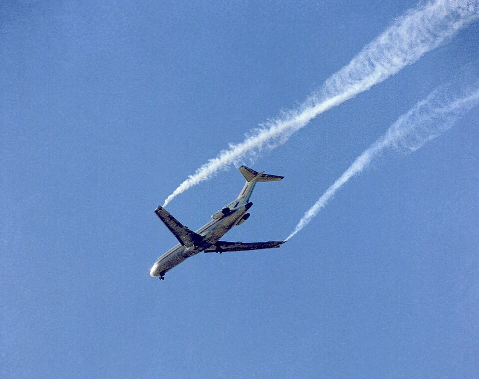

Girar no es rotar: la calesita, la vuelta al mundo y la ruedita en el agua
Tirá una hojita a un arroyo. Si el agua corre pareja, la hoja avanza sin girar. Si cerca de la orilla el agua va más lenta que en el medio, la hoja empieza a dar vueltas sobre sí misma mientras avanza. Ese giro local, el de cada pedacito de fluido sobre su propio eje, es lo que mide la vorticidad. Y tiene una sutileza: un fluido puede dar vueltas alrededor de un centro sin que sus pedacitos giren.
La vorticidad es el rotor del campo de velocidades [1]:
David Tong, de la Universidad de Cambridge, explica de dónde sale. Las derivadas de la velocidad se pueden separar en dos partes: una simétrica, el tensor de tasa de deformación, que dice cómo se estira y se aplasta el fluido, y una antisimétrica, que contiene la misma información que la vorticidad y dice cómo gira el fluido en cada punto [1]. John Cimbala, de la Universidad Estatal de Pensilvania, agrega una interpretación directa: la vorticidad es el doble de la velocidad angular de una partícula de fluido [2]. Si es cero, el flujo se llama irrotacional [2]. Las curvas tangentes a la vorticidad se llaman líneas de vórtice [1].
Cimbala usa dos imágenes de parque de diversiones [2]:
Tong lo muestra con molinetes de playa tirados al agua: en un flujo con vorticidad, los molinetes cambian de orientación mientras dan la vuelta; en el vórtice libre, cuya velocidad cae como 1/r, viajan alrededor del centro sin cambiar de orientación [1]. Pero hay una trampa: en ese vórtice, la circulación alrededor del centro no es cero, así que toda la vorticidad tiene que estar concentrada en el eje [1]. Tong dice que no es una mala aproximación de lo que pasa al vaciar una bañera, con la rejilla en el papel del eje [1].
La ruedita de paletas: poné mentalmente una ruedita de paletas en el agua. Si el agua empuja más fuerte de un lado de la ruedita que del otro, la ruedita gira: hay vorticidad. Si la empuja igual de los dos lados, la ruedita viaja sin girar, aunque el agua la lleve en círculos.
Cimbala da un ejemplo clave: dentro de una capa límite, donde la viscosidad importa, el flujo es rotacional; afuera de ella, donde la viscosidad no importa, el flujo es irrotacional [2]. Tong responde de dónde sale la vorticidad: si en algún momento es cero en todo el fluido, en un fluido ideal con fuerzas conservativas sigue siendo cero para siempre, así que tiene que venir de fuerzas no conservativas, como la fricción por viscosidad o la fuerza de Coriolis [1]. OpenStax muestra un mapa del huracán Arthur, de 2014, donde los colores representan la vorticidad relativa del aire [3].
En un fluido ideal e incompresible, la vorticidad cambia según una ecuación sencilla [1]:
Tong muestra que las líneas de vórtice «se mueven con el fluido»: se estiran y se retuercen como líneas pintadas en el agua [1]. Y que cuando un flujo estira un vórtice a lo largo de su eje, la vorticidad crece mientras el vórtice se angosta: es el estiramiento de vórtices [1]. Es la versión fluida de la patinadora que gira más rápido cuando cierra los brazos [1]. La conservación de la circulación detrás de este efecto es el tema de los teoremas de Kelvin y Helmholtz.

El tensor de deformación: en un fluido incompresible, la suma de las tres tasas de estiramiento principales es cero: si el fluido se estira en una dirección, tiene que aplastarse en otra [1]. Cómo se combinan la rotación y la deformación en un pedacito de fluido está en traslación, rotación y deformación.
La vorticidad mide el giro local del fluido, no si el flujo da vueltas. La calesita tiene vorticidad en todas partes; la vuelta al mundo, en ninguna salvo el eje. Nace en las paredes por la viscosidad, viaja con el fluido, y se intensifica cuando los vórtices se estiran. Es el ingrediente que distingue un flujo ideal de uno real.
Pregunta para la comunidad: En un río, el agua va más rápido en el medio que en las orillas. Una hojita que flota cerca de la orilla derecha, ¿hacia qué lado gira? ¿Y una que flota justo en el medio?